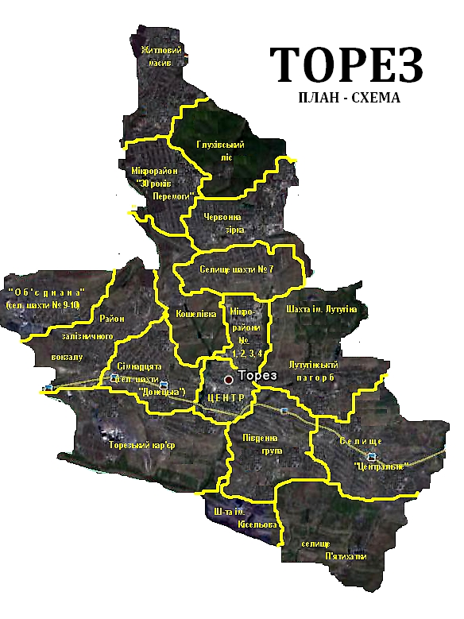

Административное деление города Торез

Центр — центральная часть города. Главная улица города — проспект Гагарина. В центре расположены Торезский городской совет, Дворец культуры им. В. Маяковского, сквер им. 50-летия Победы
Центральный посёлок
Пятихатки
Лутугинский бугор (пос. Крупской, пос. шахты им. Лутугина, Коноваловка, Профсоюзная ул., ХАБстрой)
Червона Зирка
Микрорайон «30 лет Победы» — кварталы «А», «Б», «В», «Г»
Жилмассив — посёлок бывшей шахты «Лесная»
Семнадцатая - местность на запад от Центра города (между старым городским прудом и пос. ж.-д. станции Торез)
Донецкий посёлок — местность Южнее Семнадцатой. (занимает территорию от границы с посёлком Терновая до района Семнадцатая)
Ж.-д. (Западная часть города, ж.-д. вокзал)
Девятая (пос. бывш. шахты № 9—10 «Объединённая»)
пгт Рассыпное
Монумент шахтёрам-испытателям угольного комбайна «Донбасс» (просп. Гагарина)
Бугор (район кошелевской балки и старого кладбища)
Стрела (район на западном выезде из города в сторону городов Шахтёрск, Харцызск, Макеевка, Донецк)
3-бис — посёлок шахты 3-бис
Пелагеевка — посёлок возле ж.-д. станции «Пелагеевский»
Карта города
Транспорт
-
Торез (ул. Вокзальная)
-
Рассыпное (пгт Рассыпное)
-
Пелагеевский (пгт Пелагеевка)
Железнодорожный транспорт представлен тремя вокзалами:
-
№2 "Микрорайон № 3 — ЦОФ Киселёвская
-
№4 «Микрорайон № 3 — Ш-та им. Киселёва»
-
№5 «Микрорайон № 3 — Ш-та Донецкая»
-
№8 «Автостанция — пос. Крупской»
-
№10 «Микрорайон № 3 — ЖД вокзал»
-
№10-А "Микрорайон № 3 — Гор. больница № 5 — ЖД вокзал
-
№12 «Автостанция — пос. шахты 7-бис»
-
№23 «Автостанция — Ш/у Волынское»
-
№26 «Автостанция — пос. шахты Лесная»
-
№27 «Микрорайон № 3 — Ш-та Объединённая»
-
№30 «Микрорайон № 3 — Ш/у Торезское»»
-
№31 «Микрорайон № 3 — с. Петровское»/p>
В Торезе существует хорошо развитая транспортная система внутреннего и внешнего сообщения. В городе работает 17 маршрутов общественного транспорта представленного автобусами. Крепка транспортная связь с городами Снежное и Шахтёрск. Удобное географическое положение городов Торез и Снежное стало залогом создания крупной кольцевой маршрутной трассы, проходящей между этими городами.